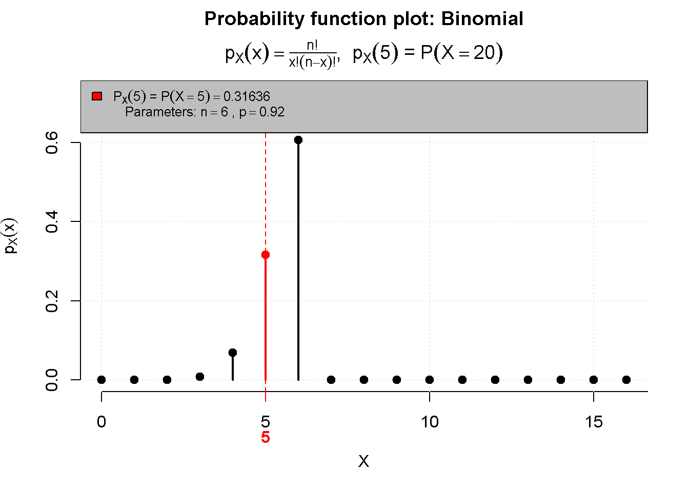
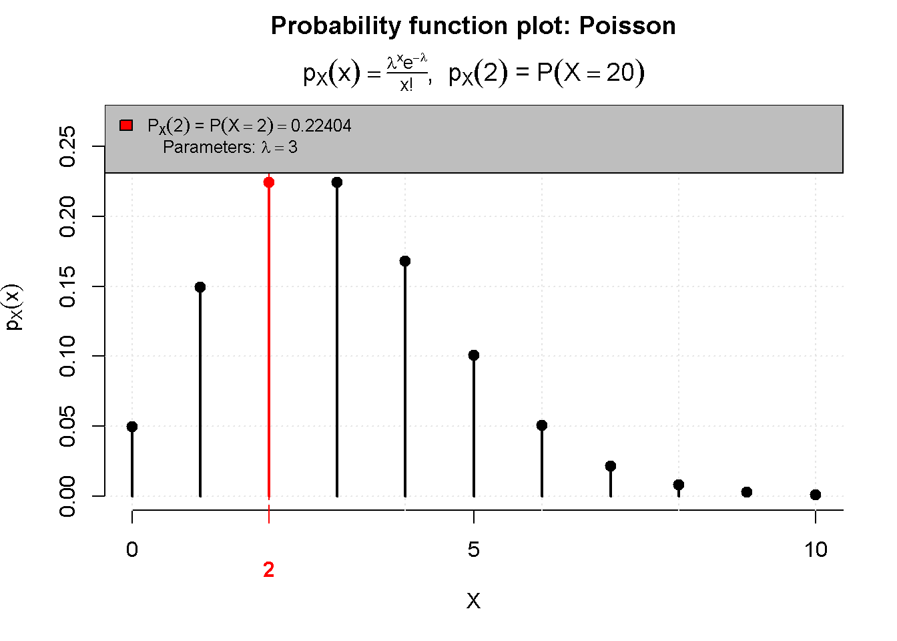
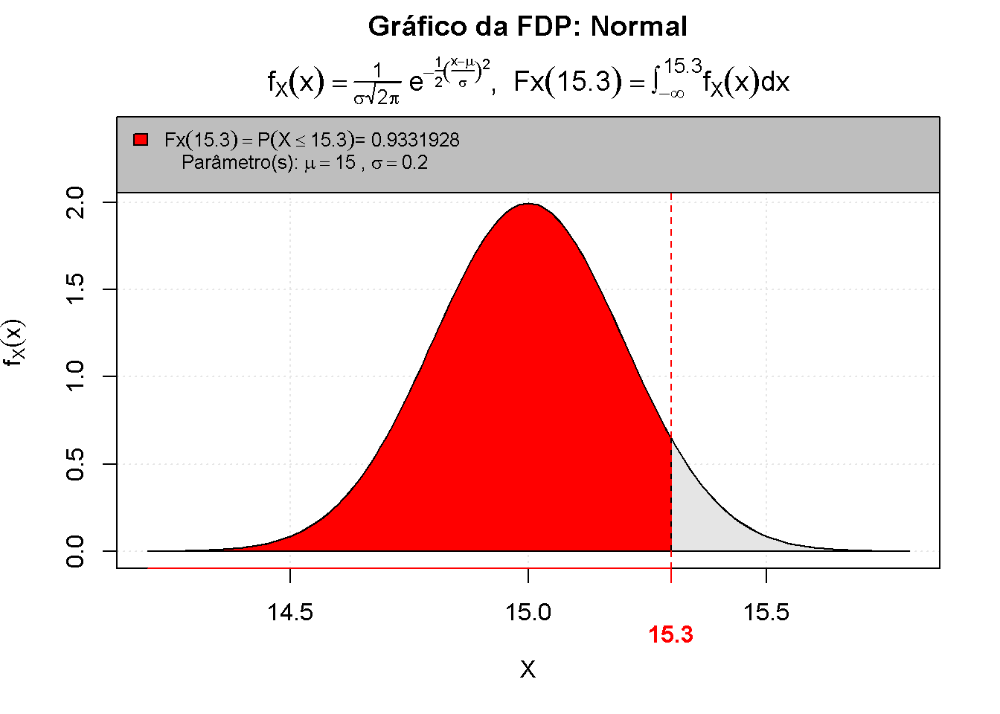
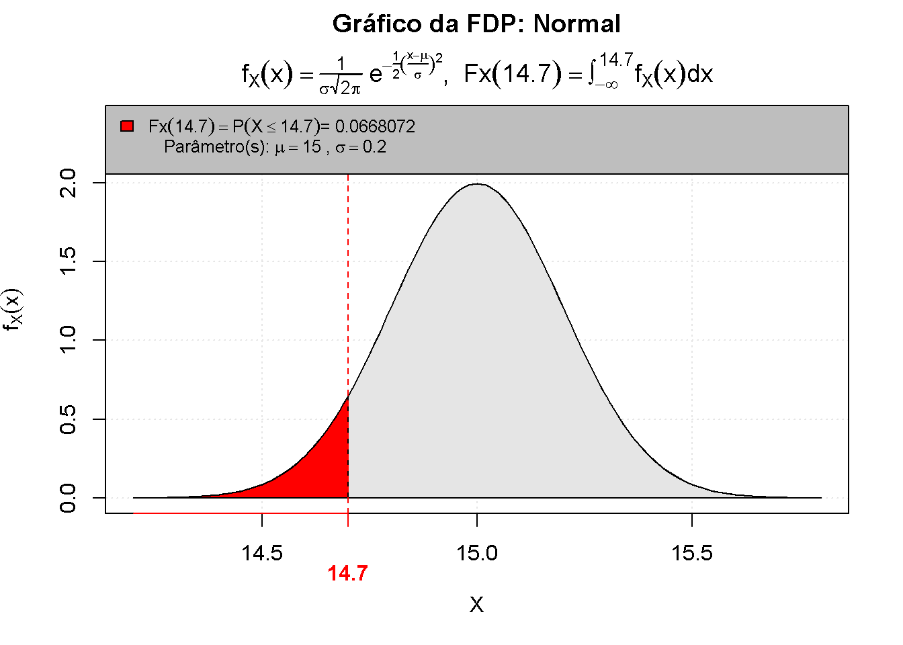

Código
library(leem)
P(q = 5,
dist = "binomial",
size = 6,
prob = 0.92,
lower.tail = NULL)
[1] 0.31636

Estatística e Probabilidade
Prof. Ben Dêivide (DEFIM/CAP/UFSJ)
Uma variável aleatória é uma função definida no espaço amostral que assume valores num conjunto de números reais, de modo que para qualquer intervalo real, o conjunto de resultados que levam a valores dentro desse intervalo seja um evento, podem ser classificadas em variáveis aleatórias discretas (assumem valores em um conjunto enumerável), contínuas (um intervalo da reta real) e mistas (WIKIPÉDIA, 2025).
O foco deste relatorio consite em conhecer as variáveis aleatórias discritivas e continuas, suas distribuições especiais de probabilidade (distribuição binomial, poisson, e normal), e também, aprofundar sobre duas outras distribuições de probabilidade de cada um dos dois tipos de variéveis aleatórias (discreta e continua).
Sendo uma função que associa cada resultado de um experimento aleatório a um número real, permitindo quantificar e analisar fenômenos incertos, ou seja, transforma os resultados qualitativos ou não numéricos do espaço amostral em valores numéricos, facilitando o cálculo de probabilidades e medidas estatísticas (Wikipédia, 2025), é classificada como:
Exemplos: número de caras ao lançar uma moeda, quantidade de peças defeituosas em um lote, número de clientes que chegam a uma loja em uma hora.
Sua probabilidade é definida pela função massa de probabilidade: \[P(X = x_i) = p_i, \quad \text{com} \quad p_i \geq 0 \quad \text{e} \quad \sum p_i = 1\]
Ela possui distribuição de probabilidade (descreve como os valores da variável aleatória se distribuem e quais são suas respectivas probabilidades de ocorrência) como: bernoulli, binomial, poisson, geométrica, hipergeométrica, uniforme discreta, etc.
Exemplos: altura de uma pessoa, tempo de duração de um processo, peso de um produto.
Sua probabilidade de assumir exatamente um valor isolado é zero. Usa-se a função densidade de probabilidade \(f(x)\), onde: \[P(a \leq X \leq b) = \int_{a}^{b} f(x) dx, \quad \text{com} \quad f(x) \geq 0 \quad \text{e} \quad \int_{-\infty}^{+\infty} f(x) dx = 1\]
As variáveis aleatórias contínuas também possuem distribuição de probabilidade como: uniforme contínua, normal, exponencial, gama, qui-quadrado, etc.
Uma variável aleatória mista combina características das variáveis aleatórias discretas (que assumem valores isolados com probabilidade definida) e das variáveis aleatórias contínuas (que tomam valores em intervalos reais, descritas por uma função densidade de probabilidade).
Na turma falamos sobre distribuições binomial, poisson e normal, buscaremos entender o funcionamento dessas distribuições.
1- Distribuição Binomial
É uma distribuição de probabilidade discreta que descreve o número de sucessos obtidos em uma sequência de \(n\) ensaios independentes, em que cada ensaio tem apenas dois resultados possíveis: sucesso ou fracasso, e a probabilidade de sucesso \(p\) permanece constante em todos os ensaios.
Sua função de probabilidade é dada por: \[P(X = x) = \binom{n}{x} \cdot p^x \cdot (1-p)^{n-x}, \quad x = 0, 1, 2, \dots, n\]
Onde: \(n\) = número total de ensaios; \(x\) = número de sucessos desejados; \(p\) = probabilidade de sucesso em um único ensaio; \(\binom{n}{x}\) = coeficiente binomial, calculado por \(\dfrac{n!}{x! \cdot (n-x)!}\)
Exemplo: Um sistema automatizado de controle verifica o funcionamento de sensores instalados em um equipamento. Verificou-se que a probabilidade de um sensor estar em perfeito funcionamento é de 92%. Se forem selecionados 6 sensores aleatoriamente para inspeção. Qual é a probabilidade de que exatamente 5 deles estejam funcionando corretamente?
Resolução:
\(n = 6\) → número total de sensores inspecionados,
\(x = 5\) → número de sensores em perfeito funcionamento
\(p = 0,92\) → probabilidade de um sensor funcionar corretamente
\(1 - p = 0,08\) → probabilidade de um sensor apresentar defeito
\[P(X = x) = \binom{n}{x} \cdot p^x \cdot (1-p)^{n-x}, \quad x = 0, 1, 2, \dots, n\] \[\binom{6}{5} = \frac{6!}{5! \cdot (6-5)!} = \frac{6 \times 5!}{5! \times 1!} = 6\]
\[P(X = 5) = 6 \cdot (0,92)^5 \cdot (0,08)^1\] \[P(X = 5) = 6 \times 0,6590815 \times 0,08 = 0,3164\] A probabilidade de que exatamente 5 dos 6 sensores estejam funcionando corretamente é de 31,64%.
library(leem)
P(q = 5,
dist = "binomial",
size = 6,
prob = 0.92,
lower.tail = NULL)
[1] 0.316362- Distribuição de Poisson
É uma distribuição de probabilidade discreta, utilizada para determinar a probabilidade de que um determinado número de eventos ocorra dentro de um intervalo fixo de tempo, espaço, volume ou outra unidade definida, desde que esses eventos aconteçam de forma independente e com uma taxa média de ocorrência constante.
Principais características:
os eventos ocorrem de maneira aleatória e independente entre si;
a taxa média de ocorrência, representada por \(\lambda\) (lambda), permanece constante ao longo de todo o intervalo analisado;
não há sobreposição entre os eventos;
a variável aleatória \(X\) indica o número de eventos observados, podendo assumir apenas valores inteiros não negativos: \(0, 1, 2, 3, \dots\).
Sua função de probabilidade é dada por: \[P(X = x) = \frac{\lambda^x \cdot e^{-\lambda}}{x!}\]
Onde:
\(P(X = x)\): probabilidade de ocorrer exatamente \(x\) eventos no intervalo considerado;
\(\lambda\): taxa média ou valor esperado de eventos no intervalo (\(\lambda > 0\));
\(e\): número de Euler, cujo valor aproximado é \(2,71828\);
\(x\): número de eventos para o qual se deseja calcular a probabilidade;
\(x!\): fatorial do valor \(x\).
Exemplo: Em um sistema automatizado, verifica-se que a taxa média de falhas em um equipamento é de 3 falhas por semana. Qual é a probabilidade de ocorrerem **exatamente 2 falhas em uma semana?
Resolução:
\[ \begin{align*} P(X = 2) &= \frac{3^2 \cdot e^{-3}}{2!} \\ &= \frac{9 \cdot 0,049787}{2} \\ &= \frac{0,448083}{2} \\ &= 0,2240 \end{align*} \]
A probabilidade de ocorrerem exatamente 2 falhas em uma semana é de aproximadamente 22,40%.
P(q = 2,
dist = "poisson",
lambda = 3, # taxa média de ocorrências
lower.tail = NULL)
[1] 0.224043- Distribuição Normal
É a distribuição de probabilidade continua mais usada, que serve para descrever como os valores de uma grandeza se distribuem na maioria das vezes. Seu gráfico tem o formato de um sino por isso também é chamada de curva em forma de sino.
Tem como principais características:
é definida por apenas dois valores;
\(\mu\) (média): o valor que fica bem no centro;
\(\sigma\) (desvio padrão): mostra o quanto os valores se afastam da média;
é simétrica: a metade da esquerda é igual à metade da direita;
a média, o valor do meio e o valor que mais aparece são todos iguais e ficam no centro;
toda a área embaixo da curva vale 1 (ou 100%), que corresponde à probabilidade total;
Sua função de probabilidade é dada por: \[ f(x) = \frac{1}{\sigma\sqrt{2\pi}} \cdot e^{-\frac{1}{2}\left(\frac{x - \mu}{\sigma}\right)^2} \]
Onde o:
\(x\): o valor que queremos analisar;
\(\mu\): média dos valores;
\(\sigma\): desvio padrão;
\(\pi \approx 3,14\) e \(e \approx 2,72\): números constantes.
Regra simples da distribuição normal:
cerca de 68% dos valores ficam bem próximos da média;
cerca de 95% ficam um pouco mais afastados;
quase 100% ficam dentro de uma faixa ao redor da média.
A distribuição normal padrão é um caso especial onde:
média \(\mu = 0\);
desvio padrão \(\sigma = 1\);
qualquer valor \(x\) pode ser transformado em \(z\): \[ z = \frac{x - \mu}{\sigma} \]
Exemplo: Em um processo de fabricação, os diâmetros de eixos produzidos por uma máquina seguem uma distribuição normal com média \(\mu = 15\) mm e desvio padrão \(\sigma = 0,2\) mm. Para que o eixo seja aprovado, seu diâmetro deve estar entre 14,7 mm e 15,3 mm. Qual é a probabilidade de que um eixo escolhido ao acaso esteja dentro da especificação?
Resolução:
Primeiro, transformamos os valores em valores padronizados \(z\): \[ z_1 = \frac{a - \mu}{\sigma} = \frac{14,7 - 15}{0,2} = \frac{-0,3}{0,2} = -1,5 \] \[ z_2 = \frac{b - \mu}{\sigma} = \frac{15,3 - 15}{0,2} = \frac{0,3}{0,2} = +1,5 \]
A probabilidade procurada é: \[ P(14,7 < X < 15,3) = P(-1,5 < Z < 1,5) \]
Consultando a tabela da distribuição normal: \[ P(Z < 1,5) = 0,9332 \quad \text{e} \quad P(Z > -1,5) = 0,0668 \]
\[ P(-1,5 < Z < 1,5) = 0,9332 - 0,0668 = 0,8664 \]
A probabilidade de o eixo estar dentro da especificação é de 86,64%.
p_entre <- P(q = 15.3,
dist = "normal",
mean = 15, # média
sd = 0.2, # desvio padrão
rounding = 8) -
P(q = 14.7,
dist = "normal",
mean = 15, # média
sd = 0.2, # desvio padrão
rounding = 8)

p_entre[1] 0.8663856Dentro das variáveis aleatórias discretas, tirando a distribuição binomial, e poisson temos outars duas distribuições de probabilidade que são:
1- Distribuição Geometrica
Sendo a distribuição de probabilidade discreta, usada para calcular a chance de que o primeiro sucesso ocorra apenas na \(x\)-ésima tentativa, em uma sequência de ensaios independentes, onde cada tentativa tem apenas dois resultados possíveis: sucesso ou fracasso, e a probabilidade de sucesso \(p\) é sempre a mesma.
Contendo características como:
cada tentativa tem apenas dois resultados: sucesso ou fracasso;
as tentativas são independentes umas das outras;
a probabilidade de sucesso \(p\) é constante em todas as tentativas;
o objetivo é saber em qual tentativa vai ocorrer o primeiro sucesso;
a variável aleatória \(X\) pode assumir os valores: \(x = 1, 2, 3, 4, \dots\) (não tem limite máximo).
Sua função de probabilidade é dada por: \[P(X = x) = (1 - p)^{x - 1} \cdot p, \quad x = 1, 2, 3, \dots\]
Onde o:
\(P(X = x)\): probabilidade de que o primeiro sucesso aconteça exatamente na \(x\)-ésima tentativa;
\(p\): probabilidade de sucesso em uma única tentativa (\(0 < p < 1\));
\(1 - p\): probabilidade de fracasso em uma única tentativa;
\(x - 1\): número de fracassos que ocorrem antes do primeiro sucesso.
Essa destribuição é aplicada em exemplos como: número de tentativas até que uma máquina consiga executar uma operação corretamente, a quantidade de peças inspecionadas até encontrar a primeira que esteja dentro da especificação, número de tentativas para acertar o ajuste de um sensor, quantidade de testes realizados até que um equipamento funcione como esperado, etc.
Exemplo: Em um processo de calibração de um sensor de posição usado em sistemas automatizados, verifica-se que a probabilidade de a calibração ficar dentro das especificações técnicas em cada tentativa é de 25%. Qual é a probabilidade de que a primeira calibração bem-sucedida ocorra exatamente na 5ª tentativa?
Resolução:
Substituindo os valores na fórmula, temos:
\[ \begin{align*} P(X = 5) &= (1 - 0,25)^{5 - 1} \cdot 0,25 \\ &= (0,75)^4 \cdot 0,25 \\ &= 0,31640625 \cdot 0,25 \\ &= 0,0791 \end{align*} \]
Logo, a probabilidade de a primeira calibração correta ocorrer exatamente na 5ª tentativa é de aproximadamente 7,91%.
p <- 0.25 # probabilidade de sucesso
k <- 5 # 5ª tentativa
# Cálculo da probabilidade
prob_geo <- (1 - p)^(k - 1) * p
# Resultado
cat("Probabilidade =", round(prob_geo * 100, 2), "%\n")Probabilidade = 7.91 %2- Distribuição Uniforme Discreta
È a distribuição de probabilidade discreta, na qual todos os valores possíveis da variável aleatória têm exatamente a mesma probabilidade de ocorrer. Não há valor mais provável do que outro, todos são igualmente prováveis.
Característica da distribuição uniforme discreta:
a variável aleatória assume um número finito de valores inteiros distintos;
todos os valores têm probabilidade idêntica de acontecer;
é definida apenas pelos valores mínimo e máximo que a variável pode assumir;
é a distribuição mais simples de todas, pois não depende de outros parâmetros complexos.
Sua função de probabilidade: Se a variável pode assumir os valores \(x = x_1, x_2, x_3, \dots, x_k\), onde \(k\) é o número total de valores possíveis:
\[P(X = x) = \frac{1}{k}\] Onde o:
\(P(X = x)\): probabilidade de ocorrer o valor \(x\);
\(k\): quantidade total de valores diferentes que a variável pode assumir;
\(\frac{1}{k}\): probabilidade igual para cada um dos valores.
Quando os valores são consecutivos, de \(a\) até \(b\) (sendo \(a\) o menor e \(b\) o maior valor), temos: \[k = b - a + 1 \quad \Rightarrow \quad P(X = x) = \frac{1}{b - a + 1}\]
Exemplo: Em um sistema automatizado de controle, um código de erro pode assumir apenas os valores inteiros de 1 a 6, e todos eles têm a mesma chance de aparecer durante o funcionamento do equipamento. Qual é a probabilidade de aparecer exatamente o código de erro número 4?
Resolução:
\[ P(X = 4) = \frac{1}{6} \approx 0,1667 \]
Portanto, a probabilidade de aparecer o código de erro número 4 é de aproximadamente 16,67%.
a <- 1 # menor valor
b <- 6 # maior valor
x <- 4 # valor desejado
# Cálculo da probabilidade
prob_unif <- 1 / (b - a + 1)
# Resultado
cat("Probabilidade =", round(prob_unif * 100, 2), "%\n")Probabilidade = 16.67 %Tal como nas discretas, nas vaviáveis aleatórias continua, para além da distribuição normal, também podemos observar outras distribuições de propriedades, onde temos duas delas sendo a distribuição exponencial e a gama.
1- Distribuição Exponencial
É uma distribuição de probabilidade contínua, usada para modelar o tempo ou intervalo que decorre até que um determinado evento ocorra pela primeira vez. Está muito ligada à distribuição de Poisson e é amplamente aplicada em estudos de confiabilidade e desempenho de equipamentos.
Tem como características:
avariável aleatória representa um *tempo, duração ou intervalo, podendo assumir apenas valores **maiores ou iguais a zero* (\(X \geq 0\));
é definida por um único parâmetro: \(\lambda\) (lambda), que representa a taxa média de ocorrência dos eventos;
apresenta a propriedade de falta de memória: a probabilidade de o evento ocorrer em um momento futuro não depende do tempo que já se passou até o momento atual;
seu gráfico é uma curva que começa em um valor alto e vai diminuindo gradualmente, nunca tocando o eixo horizontal.
A distribuição exponencial possui duas funções de probabilidade sendo:
Função densidade de probabilidade: \[f(x) = \lambda \cdot e^{-\lambda x}, \quad x \geq 0\]
Função de probabilidade acumulada: \[P(X \leq x) = 1 - e^{-\lambda x}\]
Onde o:
Exemplo: Em um sistema automatizado, verifica-se que a taxa média de falhas de um controlador eletrônico é de 0,02 falhas por hora. Qual é a probabilidade de que esse controlador apresente a primeira falha antes de completar 50 horas de funcionamento?
Resolção:
Substituindo os valores na fórmula da probabilidade acumulada:
\[ \begin{align*} P(X \leq 50) &= 1 - e^{-0,02 \cdot 50} \\ &= 1 - e^{-1} \\ &= 1 - 0,3679 \\ &= 0,6321 \end{align*} \]
Portanto, a probabilidade de o controlador apresentar a primeira falha antes de 50 horas é de aproximadamente 63,21%.
lambda <- 0.02 # taxa de falhas por hora
x <- 50 # tempo limite
# Cálculo da probabilidade
prob_exp <- pexp(q = x, rate = lambda)
# Resultado
cat("Probabilidade =", round(prob_exp * 100, 2), "%\n")Probabilidade = 63.21 %2- Distribuição Gama
É uma distribuição de probabilidade contínua, muito usada para modelar o tempo necessário para que um determinado número de eventos ocorra, ou seja, ela generaliza a distribuição exponencial, enquanto a exponencial calcula o tempo até o primeiro evento, a distribuição Gama calcula o tempo até o \(r\)-ésimo evento.
Suas características:
a variável aleatória representa tempo, duração ou intervalo, assumindo apenas valores maiores ou iguais a zero (\(X \geq 0\));
é definida por dois parâmetros principais:
\(r\): número de eventos que se deseja observar (também chamado de parâmetro de forma);
\(\lambda\): taxa média de ocorrência dos eventos por unidade de tempo;
quando \(r = 1\), a distribuição Gama se reduz exatamente à distribuição exponencial;
é amplamente aplicada em estudos de confiabilidade, manutenção e desempenho de equipamentos.
Sua função densidade de probabilidade é dada por: \[ f(x) = \frac{\lambda^r}{\Gamma(r)} \cdot x^{r - 1} \cdot e^{-\lambda x}, \quad x \geq 0 \]
Onde o:
\(f(x)\): valor da densidade para um dado tempo \(x\);
\(r\): número de eventos esperados (\(r > 0\));
\(\lambda\): taxa média de ocorrência por unidade de tempo (\(\lambda > 0\));
\(\Gamma(r)\): função gama, que para valores inteiros de \(r\) vale: \(\Gamma(r) = (r - 1)!\);
\(e\): número de Euler, aproximadamente igual a \(2,71828\);
\(x\): tempo ou intervalo analisado.
Exemplo: Em um sistema automatizado, a taxa média de falhas de um conjunto de sensores é de 0,02 falhas por hora. Qual é a probabilidade de que ocorram 3 falhas no máximo em até 100 horas de operação?
Resolução:
\[ \begin{align*} P(X \leq 100) &= \int_{0}^{100} \frac{1}{\theta^{\,r} \cdot \Gamma(r)} \cdot x^{\,r-1} \cdot e^{-\frac{x}{\theta}} \, dx \\[6pt] &= \int_{0}^{100} \frac{1}{50^{\,3} \cdot 2!} \cdot x^{2} \cdot e^{-\frac{x}{50}} \, dx \\[6pt] &= 1 - e^{-\frac{100}{50}} \cdot \left[ 1 + \frac{100}{50} + \frac{\left(\frac{100}{50}\right)^2}{2!} \right] \\[6pt] &= 1 - e^{-2} \cdot \left[ 1 + 2 + \frac{2^2}{2} \right] \\[6pt] &= 1 - 0,135335 \cdot 4 \\[6pt] &= 1 - 0,54134 \\[6pt] &= 0,3233 \end{align*} \]
\[ \boxed{P(X \leq 100) = 0,3233 \quad \Rightarrow \quad 32,33\%} \]
# Parâmetros
lambda <- 0.02
r <- 3
theta <- 1 / lambda
x <- 100
prob_gama <- pgamma(q = x, shape = r, scale = theta)
cat("Probabilidade =", round(prob_gama * 100, 2), "%\n")Probabilidade = 32.33 %Conforme vimos, as variáveis aleatórias servem para transformar situações incertas em valores numéricos e se dividem em três tipos: discretas: assumem valores contáveis, como número de peças defeituosas ou tentativas; contínuas: assumem valores dentro de um intervalo, como tempo, comprimento ou temperatura; mistas: reúnem características das duas anteriores, sendo menos comuns.
Cada distribuição tem uma finalidade específica, paara variáveis discretas: binomial: conta o número de sucessos em várias tentativas; poisson: mostra quantas vezes um evento ocorre em um período; geométrica: indica em qual tentativa ocorre o primeiro sucesso; uniforme discreta: todos os resultados têm a mesma chance de acontecer, enquanto que, para variáveis contínuas: normal: descreve como se distribuem medidas e grandezas na maioria dos casos; exponencial: calcula o tempo até a primeira falha ou ocorrência; gama: serve para saber o tempo até que vários eventos aconteçam.
Essas ferramentas permitem entender e prever o comportamento de processos e equipamentos, ajudando a tomar decisões mais seguras, controlar a qualidade e analisar o desempenho de sistemas, e sendo muito úteis na prática profissional.
PACOTE LEEM. Documentação Oficial do LEEM. Disponível em: https://cran.r-project.org/web/packages/leem/leem.pdf. Acesso em 07 mai. 2026.
R CORE TEAM. Documentação Oficial do R: Funções de Distribuição de Probabilidade. Disponível em: https://www.rdocumentation.org/packages/stats/versions/3.6.2/topics/Distributions. Acesso em 07 mai. 2026.
WIKIPÉDIA ENCICLOPÉDIA LIVRE. Variável aleatória. Disponível em: https://pt.wikipedia.org/wiki/Vari%C3%A1vel_aleat%C3%B3ria. Acesso em 07 mai. 2026.
WIKIPÉDIA ENCICLOPÉDIA LIVRE. Distribuição Binomial. Disponível em: https://pt.wikipedia.org/wiki/Distribui%C3%A7%C3%A3o_binomial. Acesso em 07 mai. 2026.
WIKIPÉDIA ENCICLOPÉDIA LIVRE. Distribuição de Poisson. Disponível em: https://pt.wikipedia.org/wiki/Distribui%C3%A7%C3%A3o_de_Poisson. Acesso em 07 mai. 2026.
WIKIPÉDIA ENCICLOPÉDIA LIVRE. Distribuição Normal. Disponível em: https://pt.wikipedia.org/wiki/Distribui%C3%A7%C3%A3o_normal. Acesso em 07 mai. 2026.
WIKIPÉDIA ENCICLOPÉDIA LIVRE. Distribuição Uniforme Discreta. Disponível em: https://pt.wikipedia.org/wiki/Distribui%C3%A7%C3%A3o_uniforme_discreta. Acesso em 07 mai. 2026.
WIKIPÉDIA ENCICLOPÉDIA LIVRE. Distribuição Geométrica. Disponível em: https://pt.wikipedia.org/wiki/Distribui%C3%A7%C3%A3o_geom%C3%A9trica. Acesso em 07 mai. 2026.
WIKIPÉDIA ENCICLOPÉDIA LIVRE. Distribuição Exponencial. Disponível em: https://pt.wikipedia.org/wiki/Distribui%C3%A7%C3%A3o_exponencial. Acesso em 07 mai. 2026.
WIKIPÉDIA ENCICLOPÉDIA LIVRE. Distribuição Gama. Disponível em: https://pt.wikipedia.org/wiki/Distribui%C3%A7%C3%A3o_gama. Acesso em 07 mai. 2026.